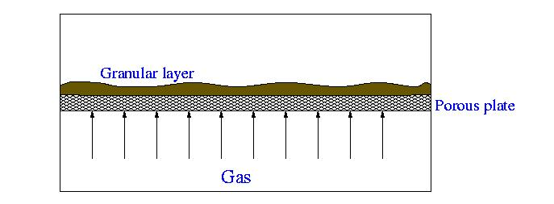

In our experiments we study the dynamics of shallow fluidized beds. When the height of the bed is much smaller than its horizontal size and characteristic bubble size for an equivalent deep bed, no bubble formation can be expected. A natural question arises on what sequence of regimes leads to a developed turbulent fluidized state in that system. Because of the large aspect ratio, the dynamics is effectively two-dimensional, which allows one to gain much information by simply observing the bed from above.

A goal of the this work is to study experimentally the transition from static to fluidized state in a shallow bed as the air flow through the bed is increased. We employ image processing in order to detect the particle motion. We found that below certain threshold value of the the air flow, the bed exhibit transient dynamics in a form of localized regions of activity which gradually disappear and eventually the bed comes to a completely motionless metastable state. Slightly above the critical air flow, the localized active regions do not disappear but move slowly across the bed in a seemingly random fashion. At large air flow spatially nonuniform oscillations emerge and the whole bed becomes active. The surface of the bed reminds that of a boiling fluid. It develops a rather irregular oscillating cellular patterns. These oscillating cells apparently have an origin related to that of bubbles in conventional fluidized beds.
In order to elucidate the mechanism of transition from the static to a dynamic state, we proposed a cellular automata model which simulate the fluidization and relaxation processes in a shallow fluidized bed. This model exhibits a similar critical behavior as the control parameter is varied.
For experimental pictures and movies go to the onset page and highflow page.
This is a presentation at the Workshop on complex Interactios in Granular Materials at Argonne National Laboratory, April 7, 2000.
For more technical details see L.S.Tsimring, R.Ramaswamy, and P.Sherman. Dynamics of a shallow fluidized bed, Phys. Rev. E, 60, 7126-7130 (1999) and D.K.Clark, L.S. Tsimring, I.S.Aranson, Oscillations and defect turbulence in a shallow fluidized bed, submitted to PRL
{kind=link}
{kind=link}
{kind=link}